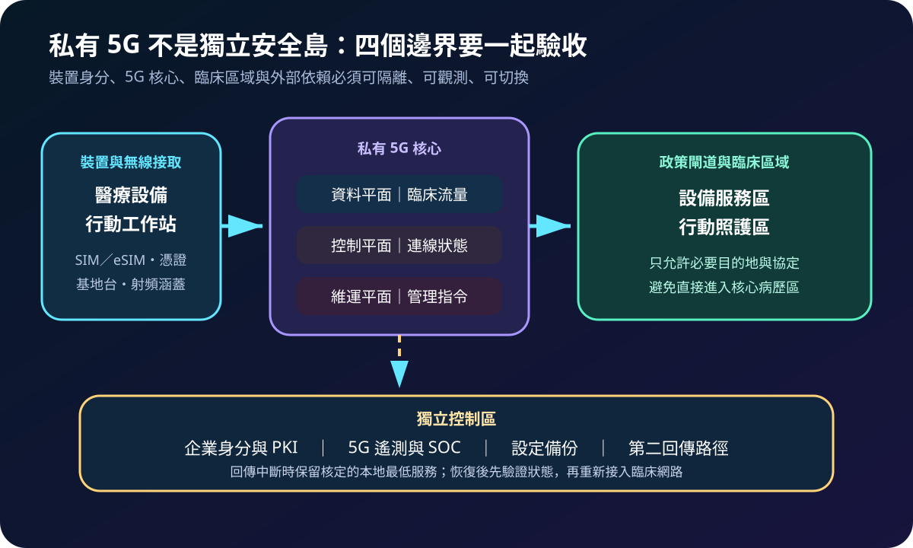
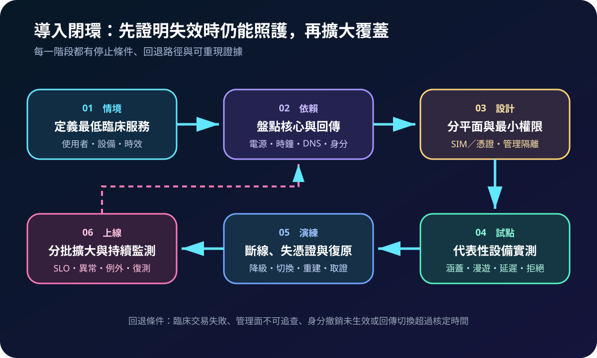
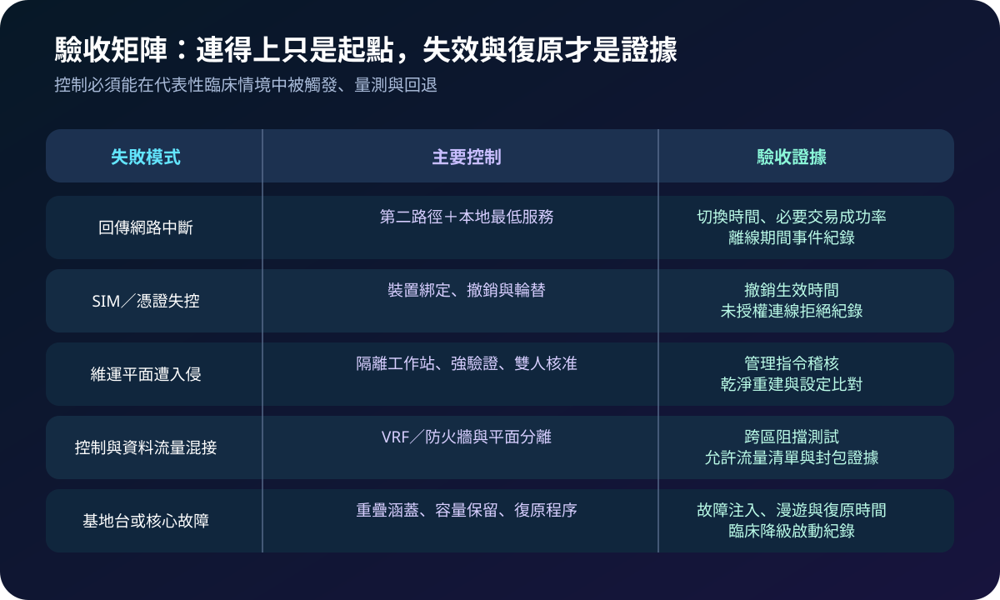

醫療資安國際觀察 · 2026-09-07
醫院導入私有 5G 如何避免單點失效：從身分到離線運作
作者：Dr. William｜醫療資訊與資安治理實務工作者
私有 5G 可支援行動照護、醫療設備與臨時場域，但「專用網路」不代表沒有外部依賴。5G 核心、身分、回傳、電源、時鐘與維運平台任一失效，都可能中斷臨床流程；規劃重點是限制信任並證明降級與復原能力。
名詞解釋：私有 5G、網路平面與回傳
私有 5G是由組織專用或受控的 5G 網路。資料平面承載設備與應用流量，控制平面管理連線狀態，維運平面用於設定與監控；三者混接會放大入侵影響。回傳網路連接基地台、5G 核心與其他院內或外部服務；回傳中斷時，只有預先設計的本地服務才能繼續運作。
國際現況與適用邊界
英國 NCSC 於 2026 年 8 月公開徵集安全且具韌性的私有 5G 方案，關注快速部署、固定基礎設施失效時的連線、企業級身分、備份復原及 5G 專屬監測；該文件是市場交流，不是採購承諾或強制標準。美國 NIST 於 2026 年 3 月發布 CSWP 36 系列，指出 5G 標準中的安全能力仍須由營運者正確配置，底層雲端與 IT 基礎設施也需另行保護；CSWP 36E 特別示範資料、控制及維運流量的隔離原則。
法域與效力：NCSC 文件反映英國研究與市場需求，NIST 文件屬美國技術白皮書，均不是台灣醫院導入私有 5G 的法定規格。台灣醫療機構可採用其架構與測試方法，實際頻譜、醫療設備、個資、電信及資安要求仍須依本地法規、主管機關公告與個案風險核定。
規劃：從最低臨床服務反推架構
先界定私有 5G 承載的設備、使用者、資料與必要交易，再盤點基地台、5G 核心、SIM／eSIM、PKI、DNS、時間同步、回傳、雲端管理及供應商遠端維運。角色至少涵蓋臨床、醫工、網路、資安、身分、設施、採購與電信供應商。驗收指標可採必要交易成功率、涵蓋與漫遊成功率、未授權連線拒絕率、憑證撤銷時間、回傳切換時間、告警可見率及設定復原時間。

實作：把連線能力轉成可驗收控制
- 綁定裝置身分：建立 SIM／eSIM、憑證、設備清冊與責任人，測試停用、遺失、輪替及快速撤銷。
- 隔離網路平面：以 VRF、防火牆與獨立管理路徑分開資料、控制和維運流量，臨床區只開放必要目的地與協定。
- 保護管理面：管理員使用隔離工作站、抗釣魚驗證與最小權限；高影響變更須限縮批次、雙人核准並留下獨立日誌。
- 設計降級模式：定義回傳或身分服務中斷時可保留的本地功能、資料一致性限制、人工流程與最長容許時間。
- 故障注入：依序測試基地台、5G 核心、回傳、憑證及管理平台失效，量測臨床交易、切換、告警、取證與復原。
風險：可用性與隔離控制可能互相拉扯
為追求快速漫遊而放寬裝置身分，會讓遺失設備持續連線；為維持離線服務而長期快取權限與資料，可能擴大過期授權及資料衝突。只做射頻涵蓋測試，會漏掉核心容量、回傳與外部身分的單點失效；把維運平台直接接入臨床核心，又可能讓一次錯誤變更或帳號入侵跨區擴散。例外必須有替代控制、責任人、期限與復測條件。

可執行清單
- 是否列出所有承載於私有 5G 的臨床流程與最低服務？
- 資料、控制、維運平面是否隔離並完成跨區阻擋測試？
- SIM、憑證與供應商帳號是否可快速撤銷且完整留痕？
- 回傳、DNS、時鐘、身分與雲端管理是否有依賴及備援圖？
- 離線模式是否定義權限期限、資料同步、人工流程與退出條件？
- 是否以代表性醫療設備完成故障注入、復原及臨床簽核？
來源
- UK NCSC｜Help shape the future of resilient private 5G（發布：2026-08-12；查閱：2026-09-07）
- NIST｜CSWP 36, Applying 5G Cybersecurity and Privacy Capabilities（發布：2026-03-19；查閱：2026-09-07）
- NIST｜CSWP 36E, 5G Network Security Design Principles（發布：2026-03-19；查閱：2026-09-07）
內容說明
本文依健康台灣深耕計畫相關治理內容整理，並參考 NCSC 與 NIST 公開資料，提出台灣醫療機構可採用的私有 5G 身分、隔離、降級及復原驗收框架；不取代主管機關公告、法律意見、頻譜許可、醫療設備認證、供應商設計或個案臨床決策。